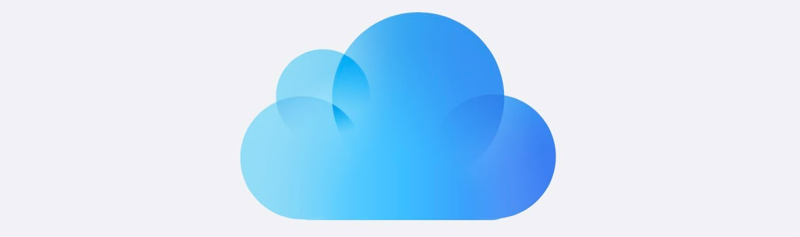

Turns the backup on. Paste a GitHub token and every tap is saved to a secret gist in your own GitHub, from then on by itself. Get the token at github.com/settings/tokens, classic token, tick only the gist scope. It is stored on this iPhone and sent to GitHub, nowhere else.
Turns the backup off. The token is deleted from this iPhone and nothing is saved to GitHub any more. Your ticks stay on this iPhone and the copy already on GitHub is left untouched.
Pulls the copy from GitHub. If the copy is newer than what is on this iPhone, it replaces what you see. This is how you get your ticks back on a new phone: connect with the same token, then Refresh.

Enter your token to back up your ticks.
Create the token at github.com/settings/tokens, classic token, and tick only the gist scope. It is stored on this iPhone and sent to GitHub, nowhere else. Nobody else can read or change your ticks with the link to this app.